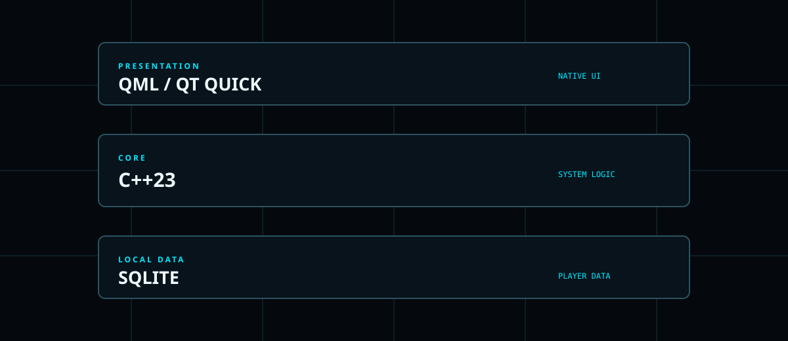

Language
Translate the interface without losing technical meaning or player intent.
IN DEVELOPMENTLocalization should preserve meaning, placeholders, interface direction and the player's intent. This section focuses on language, localization and right-to-left interface work.

Translate the interface without losing technical meaning or player intent.
IN DEVELOPMENTPersian layouts need correct direction, spacing and navigation behavior.
IN DEVELOPMENTOnly shipped and verifiable behavior should be described as implemented.
PROJECT PRINCIPLE